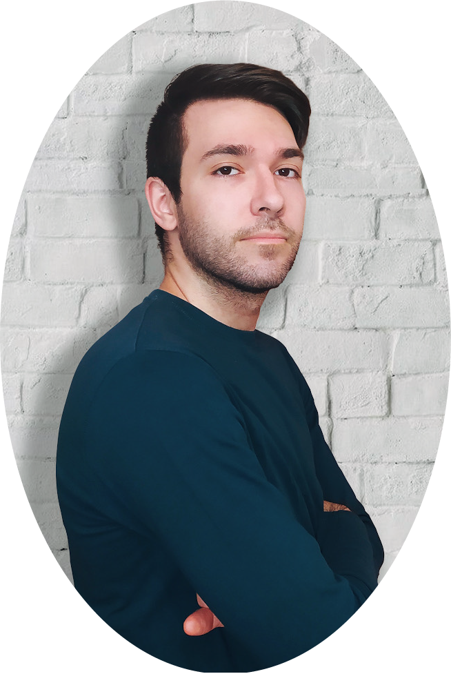

Sono nato e cresciuto nei dintorni di Mantova; mi sono diplomato in Amministrazione Finanza e Marketing, articolazione Sistemi Informativi Aziendali e poi ho deciso di proseguire gli studi con una laurea triennale in Economia Aziendale. Dopodiché, ho studiato Digital Marketing presso @start2impact e ora sto approfondendo le conoscenze dello sviluppo web. Perché non si smette mai di imparare.
Era difficile delineare la strada migliore per me, ma sapevo che alla base c'era l'idea di avere un impatto positivo nel mondo.
Non mi piace stare fermo, ecco perché allo studio ho sempre affiancato altre attività: il lavoro dal commercialista, per mettere in pratica la teoria universitaria, la pallavolo, sport che pratico fin da bambino e di cui sono diventato allenatore ormai sei anni fa, e il mio blog personale, Book Reviews, dove recensivo libri che leggevo per me stesso o per collaborazioni con autori e case editrici.
Il mondo del digital mi ha affascinato fin da piccolo: amavo smanettare e mi cimentavo nella programmazione. Mi piace creare contenuti per il web, condividere idee e trovare ispirazioni non solo per il digital, ma anche per la vita.
